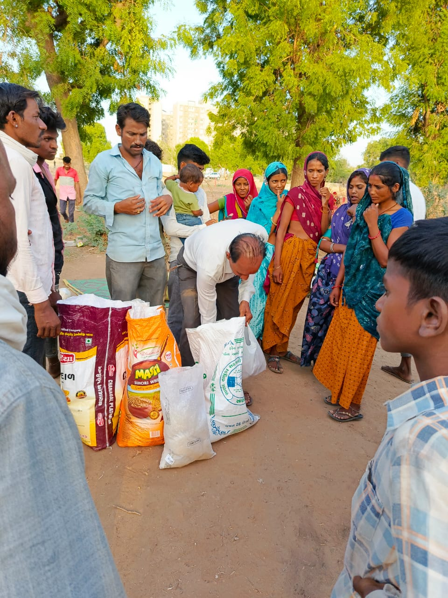
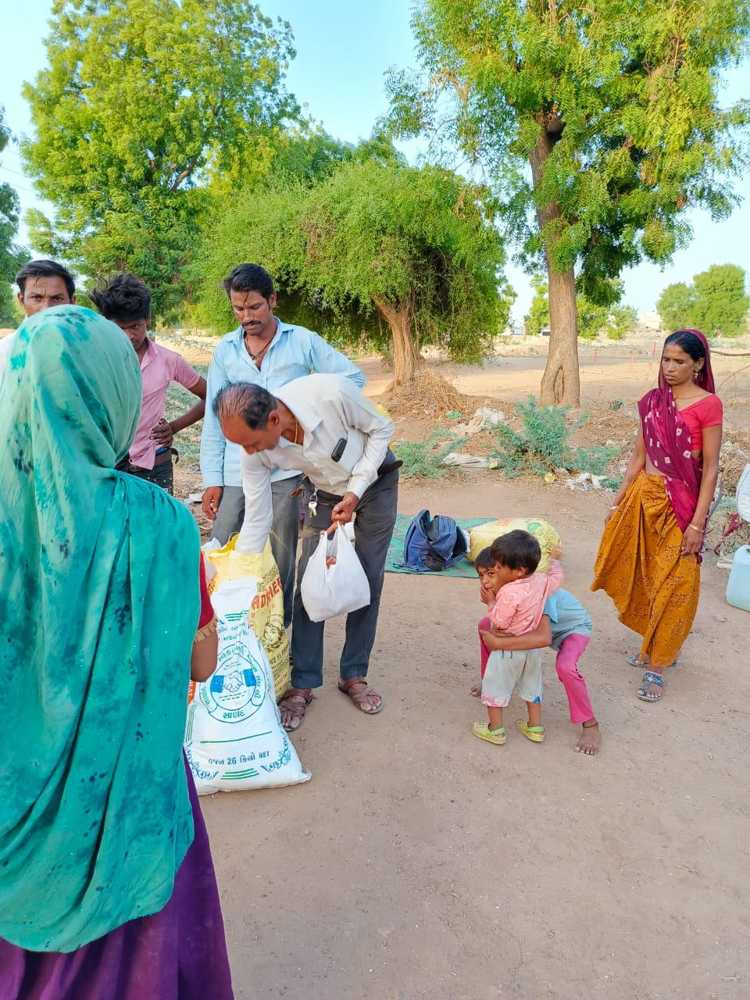
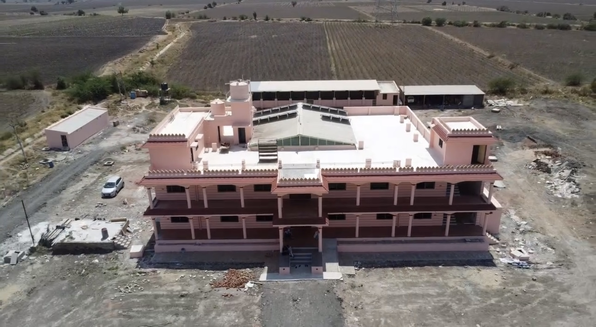
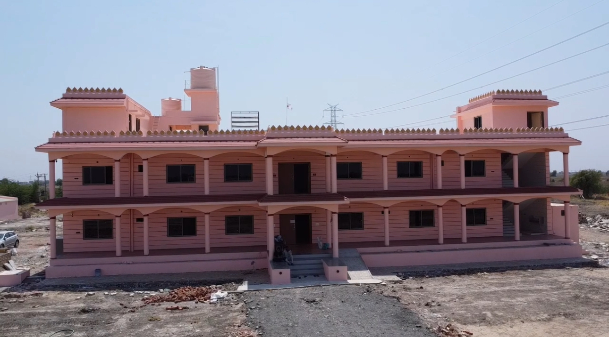
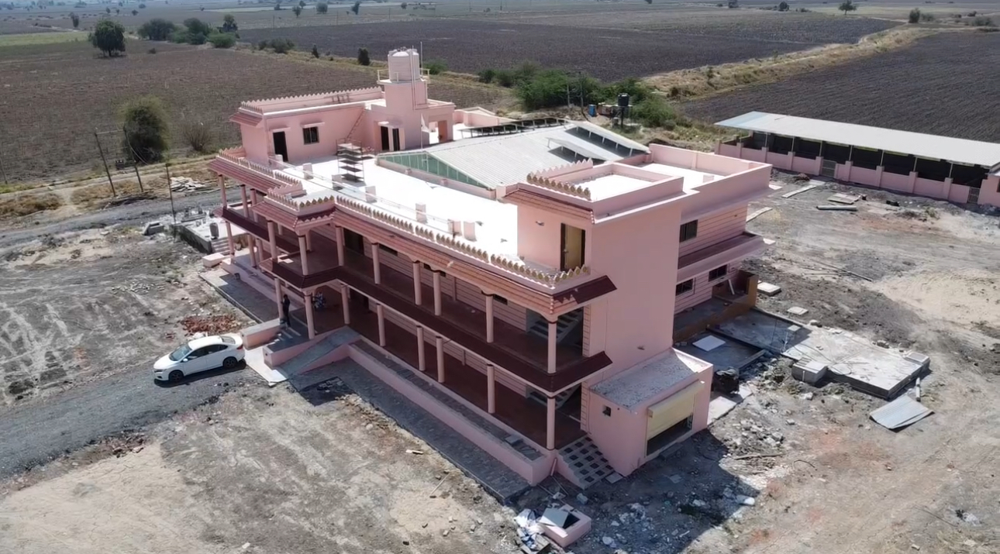
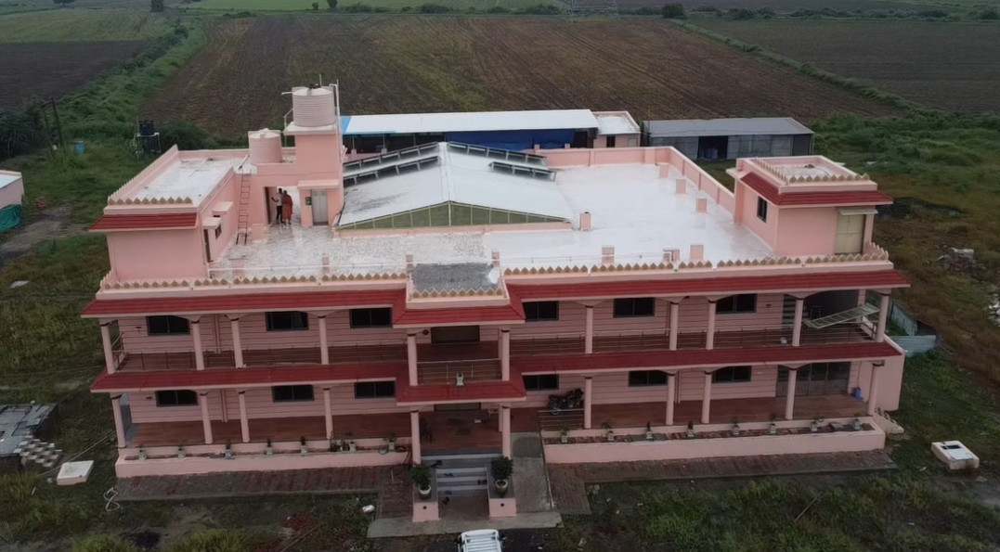
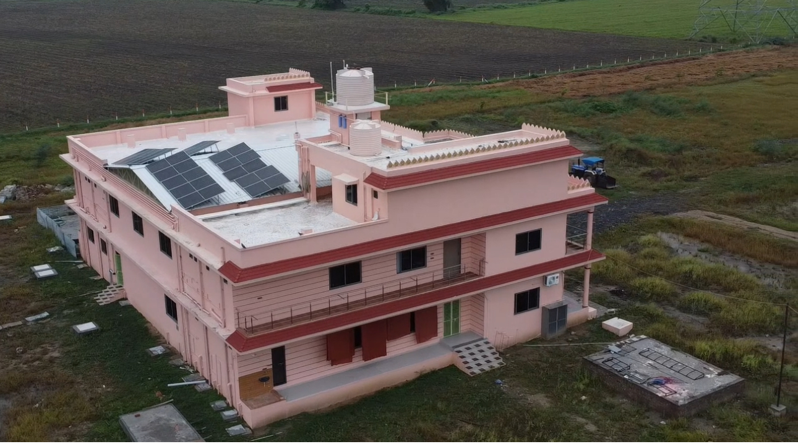

Shree Swaminarayan Vatsalya Dham
Jai Swaminarayan • Seva Story
Anna Daan Seva
Providing ration and hot food to underprivileged families in Gujarat.
Jai Swaminarayan
"All My disciples shall perform the pilgrimage to Dwarka and other holy places according to their capacity, and they shall be compassionate towards the poor and needy according to their means."
Shikshapatri, Slok 83
During His seven-year journey as Nilkanth Varni, Bhagwan Swaminarayan walked barefoot across India, witnessing profound suffering. His heart melted with compassion, laying the absolute foundation for our humanitarian ethos.
In the devastating famines of the early 19th century, He established a vast network of Sadavrats (almshouses), commanding His saints to distribute free food to all, breaking every barrier of caste and creed.
Preaching 'Jiv Daya' (compassion for all) as the highest devotion, He mandated followers to donate a portion of their income (Dharmada). Shree Swaminarayan Vatsalya Dham operates strictly upon this divine mandate, serving the destitute as a direct service to God.
" जेने काजे रे, सेवे जाई वनने... "
"Recalling the profound compassion of the Lord, who ventured into dense forests and remote villages solely for the upliftment and service of souls."
We strive to walk on His path of absolute selflessness.
Following the tradition of Sadavrats, we provide monthly ration kits and hot meals to families facing poverty. We ensure no one sleeps hungry.
Creating a peaceful sanctuary for abandoned or helpless elderly people. We offer medical care, nutritious food, and a loving, spiritual environment.
Nurturing the future by providing educational materials, moral guidance (Sanskars), and food support to underprivileged children in rural areas.

Our relief efforts and food distributions are carried out under the direct spiritual guidance and active participation of Saints from the Swaminarayan Sampraday, ensuring every act of charity is a true devotion to God.

Your contributions help us reach more remote villages and families in need.
By the grace of Shree Swaminarayan Bhagwan, we are expanding our capacity to serve. A monumental new facility is actively under construction.
This complex will integrate an expanded Vrudhashram (Old Age Home), dedicated educational halls for children, a mega-kitchen to support large-scale Anna Daan, and a prayer hall for daily devotion.





Your donations help us provide food, shelter, and care to those who need it most. Every contribution is a step towards fulfilling Bhagwan's vision of a compassionate society.
Scan QR Code to Visit baludaghanshyam.org
Scan with Camera or QR Scanner